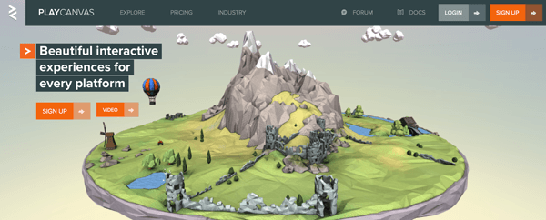

PlayCanvas is a popular 3D WebGL game engine, originally created by Will Eastcott and Dave Evans. It is open sourced on GitHub, with an editor available online and good documentation. The online editor is free for public projects with up to two team members, but there are also paid plans if you'd like to run a commercial private project with more developers.

PlayCanvas has a few well-known demos published that showcase its possibilities.
Note: Check out the list of featured demos to find more examples.
The engine itself can be used as a standard library by including its JavaScript file directly in your HTML, so you can start coding right away; in addition the PlayCanvas toolset comes with an online editor that you can use to drag and drop components onto the scene — a great way to create games and other apps requiring scenes if you're more of a designer than a coder. Those approaches are different but work equally well regarding achieving end goals.
Built for modern browsers, PlayCanvas is a fully-featured 3D game engine with resource loading, an entity and component system, advanced graphics manipulation, collision and physics engine (built with ammo.js), audio, and facilities to handle control inputs from various devices (including gamepads). That's quite an impressive list of features — let's see some in action, check out the Building up a basic demo with PlayCanvas engine for details.
Instead of coding everything from the beginning you can also use the online editor. This can be a more pleasant working environment if you are not someone who likes to code. See the Building up a basic demo with PlayCanvas editor for details.
Of course, it depends on your approach — designers may favor the online editor while programmers will prefer having the full control over the coding environment and will probably use the engine's source files. The good thing is that you have a choice and can pick whatever tools suit you best.